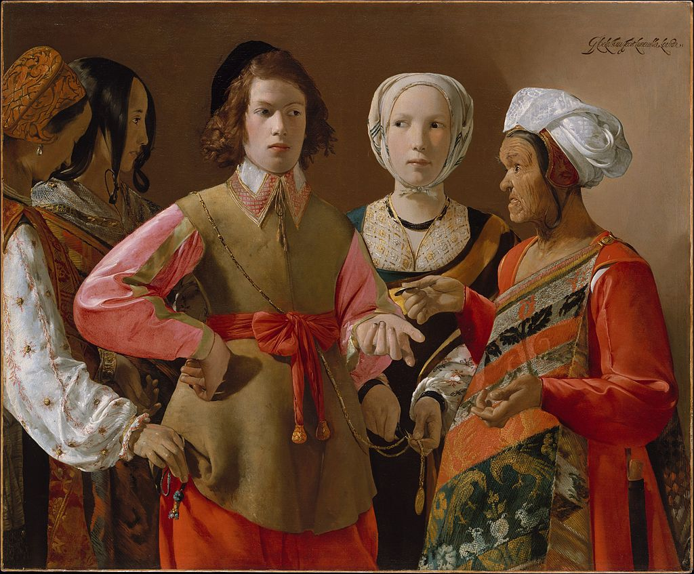

<head>
<meta charset="UTF-8" />
<meta name="keywords" content="drawing, painting" />
<meta name="description" content="drawings by Sunjy" />
<title>Sunjy</title>
<link rel="shortcut icon" type="image/x-icon" href="../../mImages/mCommon/favicon.ico" media="screen" />
<link rel="stylesheet" type="text/css" href="../../mCsses/mCommon/mCssA.css" />
<link rel="stylesheet" type="text/css" href="../../mCsses/mCommon/mCssB.css" />
<link rel="stylesheet" type="text/css" href="../../mCsses/mCommon/mCssC.css" />
<link rel="stylesheet" type="text/css" href="../../mCsses/mCommon/mCssD.css" />
<link rel="stylesheet" type="text/css" href="../../mCsses/mContent/mCssA.css" />
<link rel="stylesheet" type="text/css" href="../../mCsses/mContent/mCssB.css" />
<link rel="stylesheet" type="text/css" href="../../mCsses/mContent/mCssC.css" />
<link rel="stylesheet" type="text/css" href="../../mCsses/mContent/mCssD.css" />
</head>
<script type="text/javascript" src="../../mScripts/mContent/mContentAA.js" /></script>
<script type="text/javascript" src="../../mScripts/mContent/mContentAB.js" /></script>
<script type="text/javascript" src="../../mScripts/mContent/mContentAC.js" /></script>
<script type="text/javascript" src="../../mScripts/mContent/mContentAD.js" /></script>
<script type="text/javascript"></script> 
<script type="text/javascript">
document.write('<div class="mImgAbsolute"></div>');
/*
document.write('<p class="mFontSizeBColor" />From a white paper...</p>');
document.write('<table class="center"><tr><td>');
document.write('');
document.write('</td></tr></table>');
*/
</script>


<script type="text/javascript">
document.write('<p class="mFontSizeBColor" />The Fortune Teller</p>');
document.write('<p class="mFontSizeSColor" />“The Fortune Teller” by Georges de La Tour was painted in 1630 and re-discovered in 1960. The painting catches a moment where a young man of wealth is having his fortune told by the older woman at right.<br><br>The fortune-teller takes the coin from his hand, not only in payment but as part of the ritual in which she will cross his hand with it. Most of the women portrayed are gypsies, and after the stereotype of the time, they are depicted as thieves.<br><br>As the young man is engrossed in the fortune-telling, the woman on the left is stealing the coin purse from his pocket. Her companion in profile has a hand ready to take the purse.<br><br>The girl on the boy’s left is also in on the conspiracy, as she cuts a medal worn by the boy from its chain.<br><br>The painting’s authenticity has been questioned but is now accepted by the MET as La Tour’s work.<br><br>Georges de La Tour is better known for his religious compositions, in which the figures are illuminated by a single light source and lack the elaborate costume detail of The Fortune Teller’s characters.<br><br>The painting was discovered in a French castle in 1949. There was some doubt about its authenticity, and it remained with an art dealer until the MET purchased it in 1960.<br><br>How the painting left France became a matter of controversy in the French press in the 1960s.<br></p>');
document.write('<table class="center" /><tr><td>');
document.write('<br>The fortune-teller takes the coin from his hand, not only in payment but as part of the ritual in which she will cross his hand with it. Most of the women portrayed are gypsies, and after the stereotype of the time, they are depicted as thieves.<br><br>As the young man is engrossed in the fortune-telling, the woman on the left is stealing the coin purse from his pocket. Her companion in profile has a hand ready to take the purse.<br><br>The girl on the boy’s left is also in on the conspiracy, as she cuts a medal worn by the boy from its chain.<br><br>The painting’s authenticity has been questioned but is now accepted by the MET as La Tour’s work.<br><br>Georges de La Tour is better known for his religious compositions, in which the figures are illuminated by a single light source and lack the elaborate costume detail of The Fortune Teller’s characters.<br><br>The painting was discovered in a French castle in 1949. There was some doubt about its authenticity, and it remained with an art dealer until the MET purchased it in 1960.<br><br>How the painting left France became a matter of controversy in the French press in the 1960s.<br>" />');
document.write('</td></tr></table>');
</script>


